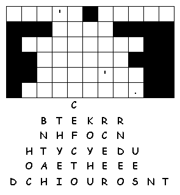

Arbeitsblätter fürs Papier |
webaktive Übungen |
visuelle Kommunikation |
Links |
wir |
Home |
|
Kre |
|||||
|
Puzzlemaker | 1 | 2 | 3 | |
Gestaltung | woher+wieviel | |||
|
Fallen Phrases: Bei Fallen Phrases sind die Buchstaben eines Texts nach untem aus dem Gerüst gefallen, und es geht darum, sie wieder einzuordnen. Das erfordert sehr gute Wortschatzkenntnisse und ist auch für Muttersprachler noch eine echte Knobelei. Wer sowas mag, mag es sehr ...... |
|||||
|
Ein englisches Sprichwort |
Einschränkung: Leider kann man die Zeilenanzahl des Rätsels nicht selbst bestimmen und auch keine give-aways" einsetzen. Fallen phrases sind sehr schwer zu lösen, wenn sie mehr als 3 oder 4 Zeilen haben. Das oben stehende Beipiel ist eine richtig harte Nuss! | ||||
|  | |||||